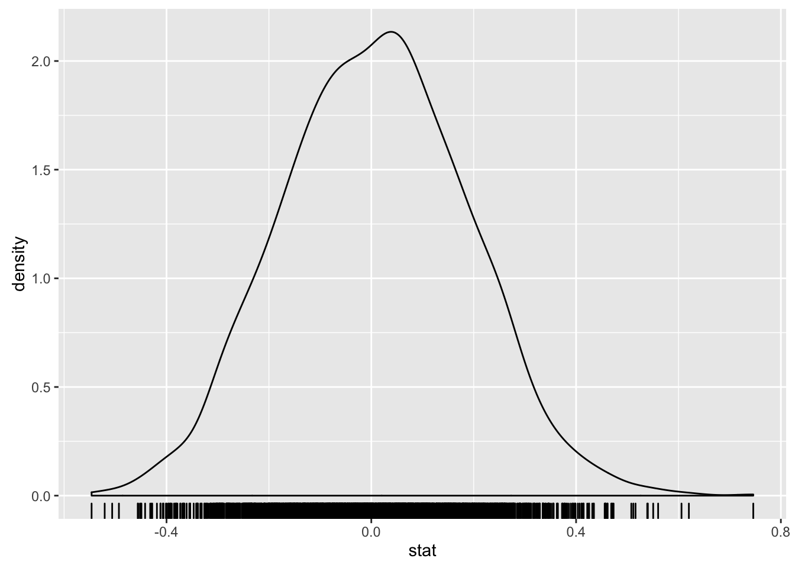
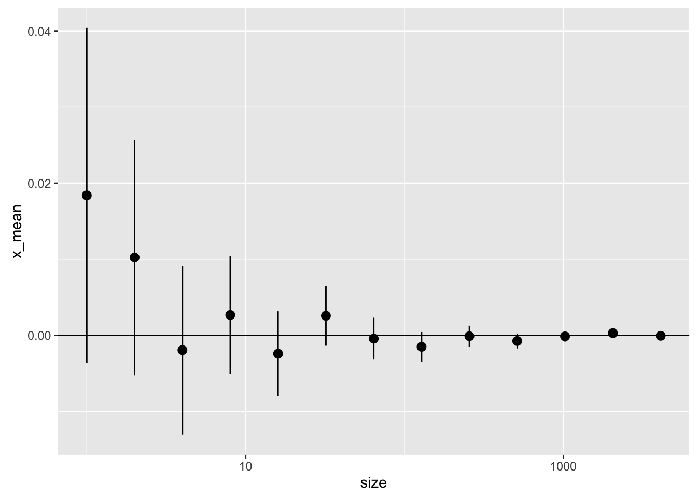
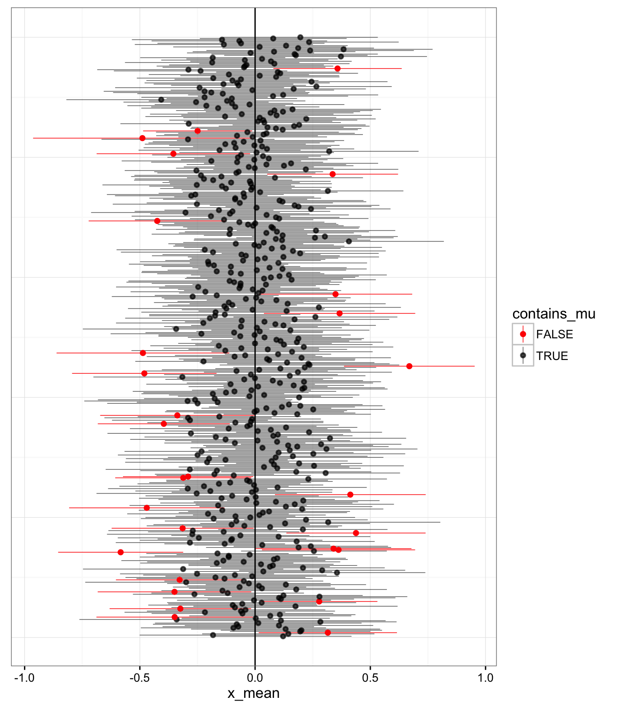
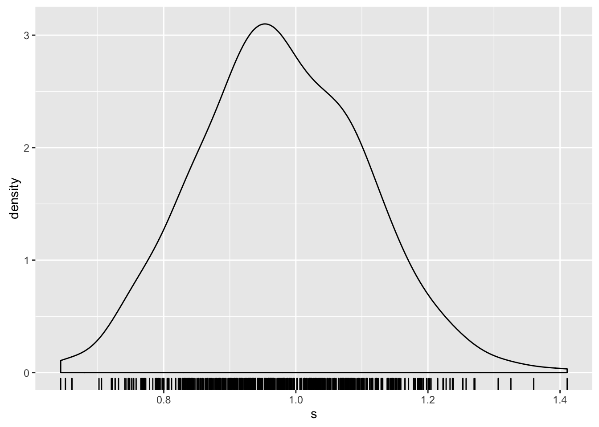

POL S/CS&SS 501, University of Washington, Winter 2016
$$ \DeclareMathOperator{\mean}{mean} \DeclareMathOperator{\var}{var} \DeclareMathOperator{\E}{E} \DeclareMathOperator{\MSE}{MSE} \DeclareMathOperator{\Bias}{Bias} \DeclareMathOperator{\SE}{se} \DeclareMathOperator{\SD}{sd} \DeclareMathOperator{\argmin}{argmin} \DeclareMathOperator{\argmax}{argmax} $$Sampling Distributions and Confidence Intervals
Jeffrey Arnold
2016-02-04
This lesson uses simulation to understand properties of sampling distributions and confidence intervals.
This lesson uses these R packages.
library("dplyr")
library("ggplot2")
library("tidyr")Inference
If we knew the population distribution, we can calculate the probability of observing a sample statistic using the sampling distribution.
- Known population: distribution and parameters. e.g. \(N(\mu, \sigma)\)
- Draw samples. \(X \sim N(\mu, \sigma)\)
- Calculate sample statistics which have a sampling distribution, \(\bar{X} \sim N(\mu, \sigma / \sqrt{n})\)
However, in inference we only know the sample or sample statistic, and want to know some parameter(s) of the population distribution.
- Known sample or at least a known statistic of a sample. E.g. \(\bar{x}\).
- ?
- Population parameter: E.g. \(\mu\).
The obvious way to do this would be to use Bayes’ Theorem, \[ p(\mu | \bar{x}) = \frac{\Pr(\bar{x}| \mu) \Pr(\mu)}{\Pr(\bar{x})} \] There are at least two problems with this approach
- Practically, this can be computationally difficult
- Theoretically, we need to assign a probability to the population parameter, prior to observing the data, \(\Pr(\mu)\). This may be objectionable to people.
- In the frequentist definition of probability, there is no probability of \(\mu\). Parameters are not random variables, they are fixed, though unknown, values. Only samples are random variables, and can have probabilities. Therefore, we can calculate the probability of observing a sample mean, \(\bar{x}\), in repeated samples given a population mean, \(\mu\). However, there is no non-degenerate probability for the population parameter \(\mu\).
There are two main frequentist approaches to the inferential problem:
- Confidence intervals
Hypothesis Testing: Calculate the sampling distribution of the sample statistic given a null hypothesis, \(H_a\), and calculate how unusual the data we observe is.
- P-value
- Significance test
These methods represent distinct and separate methods of inference, although in practice they are used in a hybrid, and somewhat incoherent, manner.
Sampling distribution
The sampling distribution of a sample statistic depends is the distribution of a sampling statistic in repeated samples.
We’ll illustrate the sampling distribution of the mean from a population distributed standard normal. To draw a single sample of size 8 and calculate the mean,
n <- 8
mean(rnorm(n))## [1] 0.2680703However, to get a sample from the sampling distribution, we need to draw many samples and for each sample calculate the mean.
n <- 8
iter <- 2048
# Investigate
results <- list()
for (i in 1:iter) {
x <- rnorm(n)
stat <- mean(x)
results[[i]] <- data_frame(i = i, stat = mean(x))
}
results <- bind_rows(results)Now we can plot the results,
ggplot(results, aes(x = stat)) +
geom_density() +
geom_rug() Try the code above by with different sample sizes: 2, 8, 16, 32, 512, 1024.
We can generalize the above code to run multiple sample sizes and plot them all. Sample sizes to draw,
sample_sizes <- 2 ^ (0:10)Number of samples to draw from the sampling distribution for each sample size,
iter <- 4096For each sample size, draw samples from the sampling distribution,
results <- list()
for (k in seq_along(sample_sizes)) {
cat("sample size:", sample_sizes[k], "\n")
sampling_dist <- list()
n <- sample_sizes[k]
for (i in 1:iter) {
# Normal distribution. mean = 0, sd = 1. mean = 0
x <- rnorm(n)
# Uniform distribution: min = 0, max = 1. mean = 0.5
# x <- runif(n)
# Geometric distribution: prob = 0.25. mean = 4
# x <- rgeom(n, prob = 0.25)
# Beta distribution. Bimodal. mean = 0.5.
# x <- rbeta(n, shape1 = 0.25, shape2 = 0.25)
# Statistics
# # Mean
stat <- mean(x)
# # Median
# stat <- median(x)
# # Maximum
# stat <- max(x)
# # Standard deviation
# stat <-sd(x)
# # Geometric mean of
# stat <- exp(mean(log(abs(x))))
sampling_dist[[i]] <- data_frame(size = n, stat = stat)
}
results[[k]] <- bind_rows(sampling_dist)
}## sample size: 1
## sample size: 2
## sample size: 4
## sample size: 8
## sample size: 16
## sample size: 32
## sample size: 64
## sample size: 128
## sample size: 256
## sample size: 512
## sample size: 1024results <- bind_rows(results) %>%
mutate(size = factor(size))Plot the results for different sample size,
ggplot(results, aes(x = stat, colour = size)) +
geom_density()In general the sampling distribution depends on three things:
- the population distribution
- the sample size
- the sample statistic
In the code there are alternative statistics and distributions, uncomment the code to try different combinations and see how the affect the shape of the sampling distribution.
Sampling Distribution of the Sample Mean
The sampling distribution of the sample mean has the following properties
- Mean: \(\mu\)
- Standard deviation: \(\sigma / \sqrt{n}\)
- As \(n \to \infty\), the distribution approaches a normal distribution (regardless of the population distribution1).
The first two properties are known as the Law of Large Number (LLN), and the final property is called the Central Limit Theorem (CLT).
Let’s convince ourselves that these hold by simulating means from a variety of population distributions, and plotting the distribution of the sampling distribution, its mean, and its standard deviation.
## Comparing mean and sample distributions of multiple samples
iter <- 8192
sample_sizes <- 2 ^ (0:12)
results <- list()
for (k in seq_along(sample_sizes)) {
n <- sample_sizes[k]
message("sample size: ", n)
stat <- rep(NA, iter)
for (i in 1:iter) {
# # Normal distribution.
# # mean = 0, sd = 1
x <- rnorm(n)
# # Uniform distribution:
# # min = 0, max = 1, mean = 0.5, sd = 0.2887
# x <- runif(n)
# # Geometric distribution: prob = 0.25.
# # mean = (1 - p) / p = 3
# # var = (1 - p) / p ^ 2 = 12
# # sd = sqrt(12)
# x <- rgeom(n, prob = 0.25)
# # Beta distribution. Bimodal.
# # mean = 0.5. sd = 0.4082
# x <- rbeta(n, shape1 = 0.5, shape2 = 0.5)
# # Bernoulli distribution.
# # mean = 0.2. sd = sqrt(0.2 * 0.8)
# x <- rbinom(n, size = 1, prob = 0.2)
stat[i] <- mean(x)
}
results[[k]] <- data_frame(stat = stat, size = n)
}
results <- bind_rows(results)
results_summary <- results %>%
group_by(size) %>%
summarize(x_mean = mean(stat),
s = sd(stat),
x_mean_se = s / sqrt(iter),
s_se = s / sqrt(2 * (iter - 1)))Set the population mean and standard deviation of the population distribution that you chose,
mu <- 0
sigma <- 1Plot the mean for different sample sizes. The mean of the sampling distribution is equal to the population mean, \(\mu\).
ggplot(results_summary, aes(x = size, y = x_mean,
ymin = x_mean - 2 * x_mean_se,
ymax = x_mean + 2 * x_mean_se)) +
geom_pointrange() +
geom_hline(yintercept = mu) +
scale_x_log10()
Plot of the standard error for different sample sizes. The standard error of the sample mean is \(\sigma / \sqrt{n}\).
ggplot(results_summary, aes(x = size,
y = s,
ymin = s - 2 * s_se,
ymax = s + 2 * s_se)) +
geom_pointrange() +
stat_function(fun = function(n) sigma / sqrt(n)) +
scale_x_log10()Plot of the distribution of the sampling distribution of the mean as the sample size increases.
ggplot(mutate(results,
normal = dnorm(stat, mean = mu, sd = sigma / sqrt(size))),
aes(x = stat)) +
geom_density() +
geom_rug() +
geom_line(mapping = aes(y = normal), col = "red") +
facet_wrap(~size, ncol = 2, scales = "free")
Binomial Distribution and the Bernoulli Distribution
The sampling distribution of the sum of Bernoulli distributed random variables is the binomial distribution. As the sample size increases, the Binomial distribution approaches a normal distribution with mean \(n p\) and standard deviation \(\sqrt{n p (1 - p)}\).
prob <- 0.2
sizes <- c(1, 2, 8, 32, 64, 256, 512, 1024)
binomial <- list()
for (i in seq_along(sizes)) {
n <- sizes[i]
binomial[[i]] <- data_frame(x = 0:n,
size = n,
p = dbinom(x, size = n, prob = prob))
}
binomial <- bind_rows(binomial)
normal <- list()
for (i in seq_along(sizes)) {
n <- sizes[i]
normal_mean <- n * prob
normal_sd <- sqrt(n * prob * (1 - prob))
normal[[i]] <- data_frame(x = seq(normal_mean - 3 * normal_sd,
normal_mean + 3 * normal_sd,
length.out = 101),
y = dnorm(x, mean = normal_mean, sd = normal_sd),
size = n)
}
normal <- bind_rows(normal)
ggplot() +
geom_bar(data = binomial, aes(x = x, y = p), stat = "identity",
alpha = 0.5) +
geom_line(data = normal, aes(x = x, y = y), color = "black", size = 1) +
facet_wrap(~size, ncol = 2, scales = "free")
Evaluating Estimators
- Estimand
Parameter to be estimated. E.g. population mean, population variance.
- Estimator
A rule for calculating an estimate given data. E.g. sample mean, sample variance.
- Estimate
A particular value of the estimator applied to data. E.g. 4.
We evaluate estimators, not particular estimates. We want to judge methods based on how well they work in repeated samples.
How can we evaluate estimators?
We need to see how well they do in repeated samples, e.g. their sampling distribution. Let \(\theta\) be the true value of the parameter, and \(\hat\theta\) be an estimator for that parameter. Note that while \(\theta\) is fixed, \(\hat\theta\) is a random variable.
Bias
The bias of an estimator is the difference between the expected value of its sampling distribution and the true value of the parameter, \[ \Bias(\theta) = \E(\hat\theta) - \theta . \]
Variance
The variance of an estimator is the variance of its sampling distribution, \[ \var(\hat\theta) = \E\left( (\hat\theta - \E(\hat\theta))^2 \right) . \]
MSE
The mean squared error evaluates the distribution on its squared error relative to the true value of the parameter, \[ \MSE(\hat\theta) = \E\left[\left(\hat\theta - \theta\right)^2 \right] . \] The MSE incorporates both the bias of the estimator and the variance, and can be rewritten as the sum of the variance and bias squared of the estimator, \[ \MSE(\hat\theta) = \var(\hat\theta) + \left(\Bias(\hat\theta)\right)^2 \] One implication of this is that biased esimators may have a better MSE than a unbiased estimator, if their variance is sufficiently lower, \[ \var(\hat\theta_{\text{unbiased}}) - var(\hat\theta_{\text{biased}}) > {\Bias(\hat\theta)}^2 . \]
What are the bias, variance, and MSE of the sample mean as an estimator of the population mean?
Its bias is 0, since \(E(\bar{X}) = \mu\). Its variance is \(\sigma^2 / n\). Since the sample mean is unbiased, its MSE is the same as its variance \[ \MSE(\bar{X}) = \var(\bar{X}) + \left(\Bias(\bar{X})\right)^2 = \var(\bar{X}) + 0 = \var(\bar{X}) \]
Other criteria
Estimators can be evaluated according to other criteria. A few common ones are:
- Consistency
As the sample size increases (\(n \to infty\)) the estimator \(\hat\theta\) gets arbitrarily close to the true value of the estimand \(\theta\).
- Efficiency
For unbiased estimators of an estimand, the estimator with the lowest variance.
- Robustness:
The estimate is not affected much by departures from the assumptions, or the estimator requires few assumptions.
Confidence Intervals
Choose a confidence level of the confidence interval
confidence <- 95
mu <- 0
sigma <- 1iter = 500
# calculate z critical value
alpha <- 1 - (confidence / 100)
z <- -qnorm(alpha / 2)
results <- list()
for (i in 1:iter) {
x <- rnorm(n, mean = mu, sd = sigma)
x_mean <- mean(x)
se <- sigma / sqrt(n)
lb <- x_mean - z * se
ub <- x_mean + z * se
contains_mu <- (mu > lb) & (mu < ub)
results[[i]] <- data_frame(x_mean = x_mean,
se = se,
lb = lb,
ub = ub,
contains_mu = contains_mu,
i = i)
}
results <- bind_rows(results)How many of these intervals contain the population mean, \(\mu\)?
summarize(results, prop_contain_mu = sum(contains_mu) / n())## Source: local data frame [1 x 1]
##
## prop_contain_mu
## (dbl)
## 1 0.95ggplot(results, aes(y = x_mean, ymin = lb, ymax = ub, x = i, color = contains_mu)) +
geom_hline(yintercept = 0) +
geom_pointrange(size = rel(0.25)) +
coord_flip() +
scale_color_manual(values = c("TRUE" = alpha("black", 0.67), "FALSE" = "red")) +
theme_bw() +
theme(axis.text.y = element_blank(),
axis.ticks.y = element_blank(),
axis.title.y = element_blank())Note that the confidence intervals (\(\bar{x}\)) are different in each sample.
The “confidence” in the confidence interval is not the probability that future samples have confidence intervals contain sample mean of the current probability interval. If we calculate this for all the confidence intervals we can check this. For a 95% confidnence interval the proportion of confidence intervals containing the sample mean of the current sample will vary by sample, but on average will be somewhere around 88%.
contains_x_mean <- rep(NA, nrow(results))
for (i in 1:nrow(results)) {
x_mean_i <- results[i, ][["x_mean"]]
contains_x_mean[i] <-
(sum(results$lb < x_mean_i & results$ub > x_mean_i) - 1) / (nrow(results) - 1)
}
summary(contains_x_mean)## Min. 1st Qu. Median Mean 3rd Qu. Max.
## 0.1663 0.7976 0.8998 0.8385 0.9439 0.9679Unknown standard deviation
Choose a confidence level of the confidence interval
confidence <- 95
n <- 30
mu <- 0
sigma <- 1
iter = 500# calculate z critical value
alpha <- 1 - (confidence / 100)
# crit_val <- -qnorm(alpha / 2)
crit_val <- -qt(alpha / 2, df = n - 1)
results <- list()
for (i in 1:iter) {
x <- rnorm(n, mean = mu, sd = sigma)
x_mean <- mean(x)
s <- sd(x)
se <- s / sqrt(n)
lb <- x_mean - z * se
ub <- x_mean + z * se
contains_mu <- (mu > lb) & (mu < ub)
results[[i]] <- data_frame(x_mean = x_mean,
s = s,
se = se,
lb = lb,
ub = ub,
contains_mu = contains_mu,
i = i)
}
results <- bind_rows(results)How many of these intervals contain the population mean, \(\mu\)?
summarize(results, prop_contain_mu = sum(contains_mu) / n())## Source: local data frame [1 x 1]
##
## prop_contain_mu
## (dbl)
## 1 0.944ggplot(results, aes(y = x_mean, ymin = lb, ymax = ub, x = i, color = contains_mu)) +
geom_hline(yintercept = 0) +
geom_pointrange(size = rel(0.25)) +
coord_flip() +
scale_color_manual(values = c("TRUE" = alpha("black", 0.67), "FALSE" = "red")) +
theme_bw() +
theme(axis.text.y = element_blank(),
axis.ticks.y = element_blank(),
axis.title.y = element_blank()) The sample standard deviations themselves have a sampling distribution, and the Student’s t-distribution accounts for that,
ggplot(results, aes(x = s)) +
geom_density() +
geom_rug()
One recommendation is to only use normal distribution quantiles for the critical values for sample sizes over 30 and if the distribution is not too skewed.
confidence <- 95
mu <- 0
sigma <- 1
iter = 2048
sample_sizes <- 3:100
# calculate z critical value
alpha <- 1 - (confidence / 100)
results <- list()
for (i in seq_along(sample_sizes)) {
n <- sample_sizes[i]
norm_critical_value <- -qnorm(alpha / 2)
t_critical_value <- -qt(alpha / 2, df = n - 1)
norm_contains_mu <- rep(NA, iter)
t_contains_mu <- rep(NA, iter)
for (j in 1:iter) {
# Sample from the normal distribution
x <- rnorm(n, mean = mu, sd = sigma)
x_mean <- mean(x)
s <- sd(x)
se <- s / sqrt(n)
z <- (x_mean - mu) / se
norm_contains_mu[j] <- abs(z) < norm_critical_value
t_contains_mu[j] <- abs(z) < t_critical_value
}
results[[i]] <-
data_frame(n = n,
`Normal` = sum(norm_contains_mu) / iter,
`Student's t` = sum(t_contains_mu) / iter)
}
results <- bind_rows(results) %>%
gather(se_type, contains_mu, -n)ggplot(results, aes(x = n, y = contains_mu, color = se_type)) +
geom_point() +
geom_line() +
geom_hline(yintercept = 1 - alpha) +
xlab("Sample size") +
ylab(expression(paste("Prop intervals containing ", mu))) +
scale_color_discrete("")Skewed distribution
What if we sample from a skewed distribution such as the geometric distribution?
confidence <- 95
prob <- 0.1
iter = 2048
sample_sizes <- 3:100
# mean of geom is (1 - p) / p
mu <- (1 - prob) / prob
alpha <- 1 - (confidence / 100)
results <- list()
for (i in seq_along(sample_sizes)) {
n <- sample_sizes[i]
norm_critical_value <- -qnorm(alpha / 2)
t_critical_value <- -qt(alpha / 2, df = n - 1)
norm_contains_mu <- rep(NA, iter)
t_contains_mu <- rep(NA, iter)
for (j in 1:iter) {
x <- rgeom(n, prob = prob)
x_mean <- mean(x)
s <- sd(x)
se <- s / sqrt(n)
z <- (x_mean - mu) / se
norm_contains_mu[j] <- abs(z) < norm_critical_value
t_contains_mu[j] <- abs(z) < t_critical_value
}
results[[i]] <-
data_frame(n = n,
`Normal` = sum(norm_contains_mu) / iter,
`Student's t` = sum(t_contains_mu) / iter)
}
results <- bind_rows(results) %>%
gather(se_type, contains_mu, -n)ggplot(results, aes(x = n, y = contains_mu, color = se_type)) +
geom_point() +
geom_line() +
geom_hline(yintercept = 1 - alpha) +
xlab("Sample size") +
ylab(expression(paste("Prop intervals containing ", mu))) +
scale_color_discrete("")If a less than C% of a C% confidence interval contain the true value of the parameter, are the confidence intervals too narrow or too wide?
Miscellaneous
- What if the population is finite? How does that affect confidence intervals and standard errors?
- What if observations are not independent? Consider examples with clustering or autoregression.
Common misinterpretations of confidence intervals
Suppose you have a treatment that you suspect may alter performance on a certain task. You compare the means of your control and experimental groups (say 20 subjects in each sample). Further, suppose you use a simple independent means t-test and your result is significant (t = 2.7, d.f. = 18, p = 0.01). Please mark each of the statements below as “true” or “false.” “False” means that the statement does not follow logically from the above premises. Also note that several or none of the statements may be correct (between the population means) (From Hoekstra et al. 2014. “Robust Misinterpretation of Confidence Intervals.” Psychological Bulletin Review)
- The probability that the true mean is greater than 0 is at least 95%
- The probability that the true mean equals 0 is smaller than 5%.
- The “null hypothesis” that the true mean equals 0 is likely to be incorrect
- There is a 95% probability that the true mean lies between 0.1 and 0.4
- If we were to repeat the experiment over and over, then 95% of the time the true mean falls between 0.1 and 0.4.
- If we were to repeat the experiment over and over then 95% of the confidence intervals would contain the sample mean of 0.25.
All of these are false. The correct interpretation is:
The confidence interval was generated using a method so that in repeated samples, 95% of the samples the confidence interval will contain the true mean.
There are a few technical conditions for the CLT, but that’s not our concern here.↩

This work is licensed under a Creative Commons Attribution-NonCommercial-ShareAlike 4.0 International License. R code is licensed under a BSD 2-clause license.